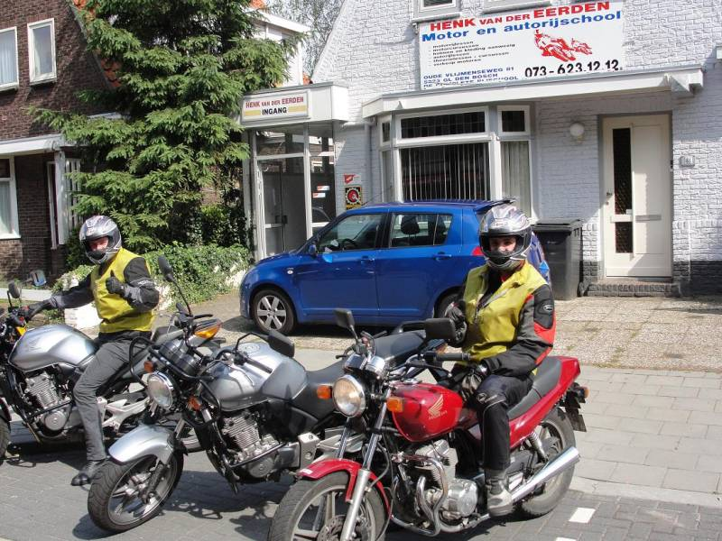

Je komt in een ritme
Na een half uur zit je pas echt in de rit. In een losse les is dat het moment waarop je alweer moet omkeren. In een blok begint het daar pas.
Motorrijles · rijbewijs A
Het motorrijbewijs bestaat uit twee praktijkexamens: voertuigbeheersing (AVB) en verkeersdeelneming (AVD). Bij Henk train je in elk blok aan allebei — met genoeg kilometers om het niet alleen te kúnnen, maar ook te snappen.
Het traject
Je belt Henk, plant je eerste blok en komt langs. Helm, handschoenen, laarzen en kleding hangen klaar — je hoeft niets te kopen. In het eerste blok voel je meteen of motorrijden — en Henk — bij je past. Grote kans van wel.
Achtjes, slalom, noodstop, uitwijken: je leert de motor volledig beheersen op het oefenterrein én onderweg. Vind je iets spannend? Dan pakt Henk het anders aan — desnoods mag je eerst een keer achterop om een oefening aan te voelen.
Het CBR wijst 7 van de 12 oefeningen aan; minimaal 5 moeten voldoende zijn, met per cluster minstens één voldoende. Klinkt streng — maar tegen die tijd is dit voor jou routine.
Stad, provinciale weg, snelweg. Je leert kijken, positioneren en beslissen zoals een motorrijder met jaren ervaring. Henk rijdt achter je en geeft directe feedback via de intercom — en bij de koffie nemen jullie alles door.
Henk stuurt je pas op examen als je er klaar voor bent. Daarom slaagt 96 tot 100% van zijn leerlingen in één of twee keer. Daarna ben je geen geslaagde — je bent een motorrijder.
De blokles
Geen les van vijftig minuten waarin je vooral bezig bent met opstarten en terugrijden. Eén blok is één echte rit — met halverwege koffie en persoonlijke feedback.
Na een half uur zit je pas echt in de rit. In een losse les is dat het moment waarop je alweer moet omkeren. In een blok begint het daar pas.
Den Bosch uit, de provinciale weg op, de snelweg over. Veel kilometers per les betekent veel situaties — en dus veel geleerd.
Halverwege even van de motor. Wat ging goed, wat kan strakker, waar ga je op letten? Feedback beklijft beter met twee handen om een warme mok.
AVB — voertuigbeheersing
Op het AVB-examen laat je zien dat jij de motor onder controle hebt — niet andersom. Het CBR wijst 7 van de 12 oefeningen aan; minimaal 5 moeten voldoende zijn en in elk cluster minstens één.
De beruchtste? Het achtje. Bij Henk oefen je hem tot je hem durft én snapt — kijktechniek, koppeling, en waar je gewicht heen moet.
Parkeren, balanceren, de motor op en van de standaard — voelen wat 200 kilo doet.
Achtje, slalom, stapvoets rijden — koppeling, balans en kijktechniek.
Uitwijken en vlotte slalom — sturen met lef op beheersbare snelheid.
Noodstop, precisiestop en uitwijkoefening — remmen zoals het moet.
Tarieven
Alles wat je nodig hebt zit erin: motor, brandstof, verzekering én alle kleding. Je betaalt voor rijden — niet voor randzaken.
Eerste blok — proef het vak
€ 195eenmalig
Compleet — incl. AVB- & AVD-examen
€ 2.439totaal
Vlot traject — incl. beide examens
€ 2.049totaal
| Los & extra | Toelichting | Prijs |
|---|---|---|
| Losse blokles (3 uur) | Ook voor opfrislessen of extra oefening | € 195,- |
| AVB-examen (CBR) | Voertuigbeheersing, los bijgeboekt | € 197,50 |
| AVD-examen (CBR) | Verkeersdeelneming, los bijgeboekt | € 307,50 |
| Theoriecursus online | Speedtheorie: leerboek + 15 uur internetopleiding | € 109,- |
| Theorie-examen (CBR) | Let op: examenlocatie Eindhoven of Schelluinen | € 75,- |
Tarieven zoals gepubliceerd op henkvandereerden.nl. Vraag bij je intake naar de actuele prijzen — Henk is er eerlijk over, dat scheelt.
Alles inbegrepen
Motorkleding kost al snel honderden euro's. Bij Henk hangt alles voor je klaar, in meerdere maten. Pas als jij zeker weet dat motorrijden jouw ding is, ga je zelf shoppen — en ook dan denkt Henk graag mee.
Goedgekeurd, schoon en in jouw maat. Eigen helm mag natuurlijk ook.
Grip en bescherming — verplicht op de motor, dus geregeld.
Stevige motorlaarzen in meerdere maten — enkels blijven heel.
Jas en broek met protectie — ook als het regent of vriest. Les gaat door.

Theorie
Voor je AVD-examen heb je je motortheorie-certificaat nodig. Via Henk volg je de online snelcursus van Speedtheorie: actueel leerboek, 15 uur internetopleiding en proefexamens voor € 109,-.
Bel voor een eerlijke intake. Henk vertelt je precies wat het traject voor jouw situatie wordt — A2 of A, met of zonder ervaring.